dat.shape(13855, 12)dat.shape(13855, 12)dat.columnsIndex(['country', 'ccode', 'year', 'polity', 'gdppc', 'pop', 'continent',
'regime_type', 'infant_mort', 'life_exp', 'life_exp_female',
'life_exp_male'],
dtype='object')dat.indexRangeIndex(start=0, stop=13855, step=1)dat.head()| country | ccode | year | polity | gdppc | pop | continent | regime_type | infant_mort | life_exp | life_exp_female | life_exp_male | |
|---|---|---|---|---|---|---|---|---|---|---|---|---|
| 0 | Afghanistan | 700 | 1800.0 | -6.0 | 211.276682 | 1.564573e+07 | Asia | authoritarian | NaN | NaN | NaN | NaN |
| 1 | Afghanistan | 700 | 1801.0 | -6.0 | 211.276682 | 1.564573e+07 | Asia | authoritarian | NaN | NaN | NaN | NaN |
| 2 | Afghanistan | 700 | 1802.0 | -6.0 | 211.276682 | 1.564573e+07 | Asia | authoritarian | NaN | NaN | NaN | NaN |
| 3 | Afghanistan | 700 | 1803.0 | -6.0 | 211.276682 | 1.564573e+07 | Asia | authoritarian | NaN | NaN | NaN | NaN |
| 4 | Afghanistan | 700 | 1804.0 | -6.0 | 211.276682 | 1.564573e+07 | Asia | authoritarian | NaN | NaN | NaN | NaN |
dat.dtypescountry object
ccode int64
year float64
polity float64
gdppc float64
pop float64
continent object
regime_type object
infant_mort float64
life_exp float64
life_exp_female float64
life_exp_male float64
dtype: objectyear to integer typecontinent to categorical typeregime_type to categorical typedat.year = dat.year.astype("int")
dat.country = dat.country.astype("category")
dat.continent = dat.continent.astype("category")
dat.regime_type = dat.regime_type.astype("category")dat.dtypescountry category
ccode int64
year int64
polity float64
gdppc float64
pop float64
continent category
regime_type category
infant_mort float64
life_exp float64
life_exp_female float64
life_exp_male float64
dtype: objectCategorical variables are similar to factor variables in R
dat.continent.unique()[Asia, Europe, Africa, Americas, Oceania]
Categories (5, object): [Asia, Europe, Africa, Americas, Oceania]dat.continent.cat.codes.unique()array([2, 3, 0, 1, 4])Depending on the unit of analysis: - what’s the temporal coverage of the data? - what’s the spatial coverage of the data?
min_year = dat.year.min()
max_year = dat.year.max()
print(f"The data ranges from {min_year} to {max_year}.")The data ranges from 1800 to 2016.dat.country.unique()[Afghanistan, Albania, Algeria, Angola, Argentina, ..., Uruguay, United States, Venezuela, Zambia, Zimbabwe]
Length: 122
Categories (122, object): [Afghanistan, Albania, Algeria, Angola, ..., United States, Venezuela, Zambia, Zimbabwe]There are 122 countries in the data.
Are all countries in the data for the same years? A simple way we can explore this is to plot the spatial unit (if fixed and not too large, on the temporal unit.
sns.set_context("notebook", font_scale=2)
g = sns.relplot("year","country",
hue = "continent",
kind="scatter",
height=30,s=200,
data=dat.sort_values('continent'))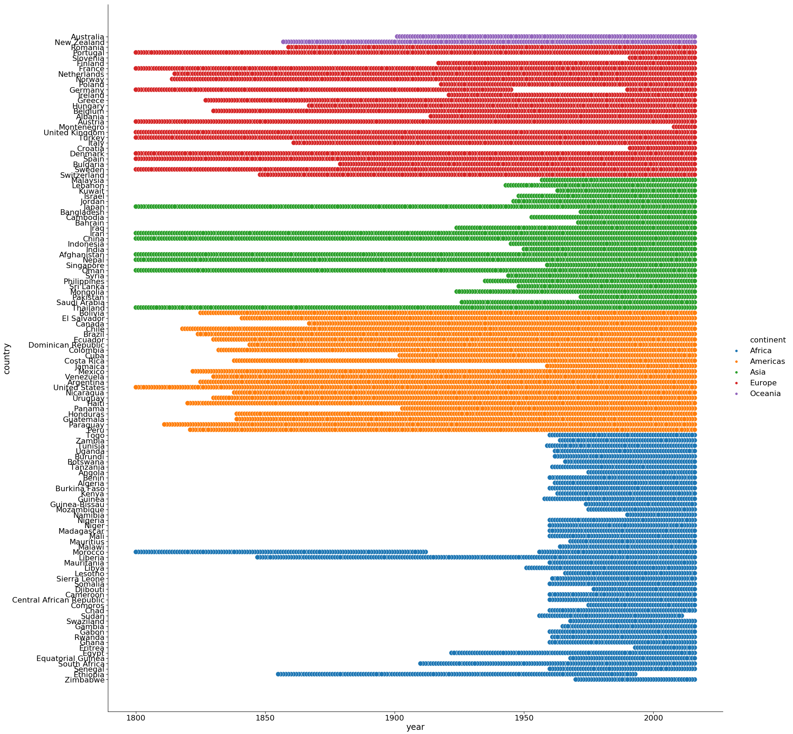
As we can see there are large inconsistencies in coverage. Only a few countries are in the data for the whole 1800 to 2016 time period. Others drop in and out (potentially given their political status). We need to proceed cautiously when using this data in its raw format.
# Count the missing entries
dat.isna().sum(axis=0)country 0
ccode 0
year 0
polity 0
gdppc 0
pop 0
continent 0
regime_type 0
infant_mort 7638
life_exp 7370
life_exp_female 7370
life_exp_male 7370
dtype: int64# Proportion of missingness
(dat.isna().sum(axis=0)/dat.shape[0]).round(2)country 0.00
ccode 0.00
year 0.00
polity 0.00
gdppc 0.00
pop 0.00
continent 0.00
regime_type 0.00
infant_mort 0.55
life_exp 0.53
life_exp_female 0.53
life_exp_male 0.53
dtype: float64Roughly half the data is missing for four of the float indicators in the data.
dat = dat.assign(missing = np.where(dat.life_exp.isna(),"Yes","No"))
sns.relplot("year","country",
hue='missing',
kind="scatter",
height=30,s=200,
palette = ["steelblue","darkred"],
data=dat.sort_values('continent'))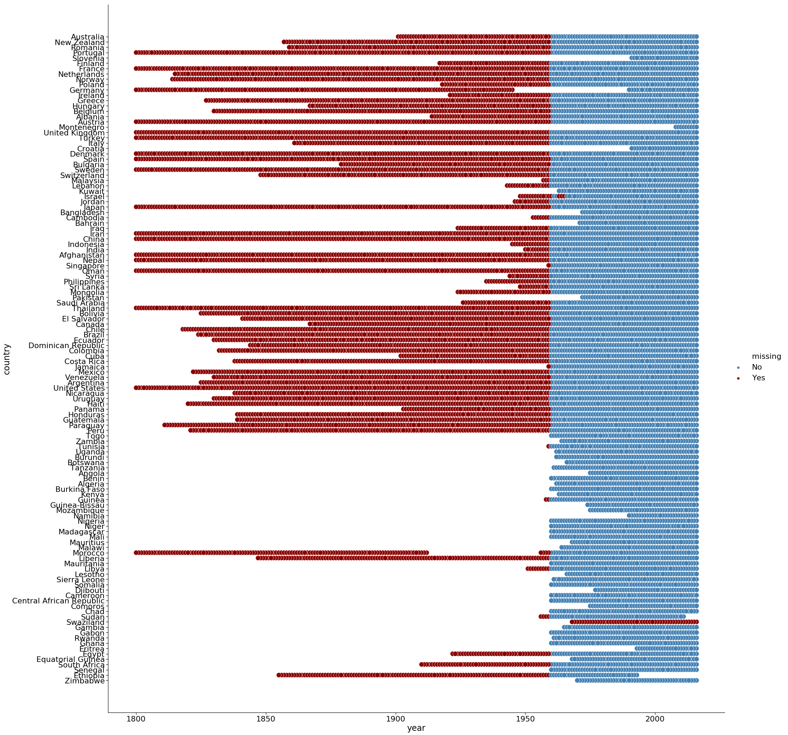
It looks like the life expectancy indicators only cover from 1960 onward. To use these data, we can only consider this time period. Thus, a feasible strategy to deal with the missingness might be to reduce the scope of our analysis to only include 1960 through 2016.
dat = dat.query("year >= 1960").reset_index()
dat.shape(6538, 14)


| Data Type | Example | Scale |
|---|---|---|
| Numerical | 1.3, 800, 10e3 | Continuous |
| Integer | 1, 2, 3 | Discrete (when \(n\) is small), Continuous (when \(n\) is large) |
| Categorical | “dog”, “Nigeria”, “A” | Discrete |
| Ordered | “Small”, “Medium”, “Large” | Discrete |
| Dates/Time | 2009-01-02, 5:32:33 | Continuous |


Pandas offers both these summaries jointly with the the .describe() method.
dat.describe(include="float").round(1).T| count | mean | std | min | 25% | 50% | 75% | max | |
|---|---|---|---|---|---|---|---|---|
| polity | 6538.0 | 1.1 | 7.4 | -10.0 | -7.0 | 2.0 | 9.0 | 1.000000e+01 |
| gdppc | 6538.0 | 5814.4 | 11299.3 | 37.5 | 383.1 | 1210.6 | 5147.7 | 1.030592e+05 |
| pop | 6538.0 | 38776599.2 | 133833028.0 | 220312.0 | 3723898.8 | 8930337.0 | 23616013.7 | 1.378665e+09 |
| infant_mort | 6217.0 | 58.0 | 48.7 | 1.6 | 15.7 | 45.6 | 92.5 | 2.365000e+02 |
| life_exp | 6485.0 | 62.7 | 12.2 | 18.9 | 52.9 | 65.0 | 72.9 | 8.400000e+01 |
| life_exp_female | 6485.0 | 64.9 | 12.8 | 22.4 | 54.4 | 67.2 | 75.7 | 8.710000e+01 |
| life_exp_male | 6485.0 | 60.6 | 11.7 | 16.3 | 51.2 | 62.9 | 70.2 | 8.170000e+01 |
dat.describe(include="category").T| count | unique | top | freq | |
|---|---|---|---|---|
| country | 6538 | 122 | Jordan | 57 |
| continent | 6538 | 5 | Africa | 2441 |
| regime_type | 6538 | 3 | democracy | 2803 |
dat.groupby(['continent']).size()continent
Africa 2441
Americas 1311
Asia 1387
Europe 1285
Oceania 114
dtype: int64dat.groupby(['country']).size().sort_values(ascending=False).head()country
Jordan 57
Indonesia 57
France 57
Gabon 57
Ghana 57
dtype: int64dat.groupby(['regime_type']).size().sort_values(ascending=False).head()regime_type
democracy 2803
authoritarian 2227
competitive authoritarian 1508
dtype: int64# Rest the basic setup
sns.set_context("notebook", font_scale=1.5)
# Set up a subplot using matplotlib
f, axes = plt.subplots(2, 2, figsize=(15, 10)) # set up the
plt.subplots_adjust(wspace = 0.5,hspace = 0.5) # increase the space between plots
# assign a variable
var = dat["life_exp"].dropna()
g = sns.distplot(var,hist=True,kde=False,ax=axes[0,0])
g.set_title("Histogram")
g = sns.kdeplot(var,shade=True,ax=axes[0,1],legend=False)
g.set_title("Density Plot")
g = sns.rugplot(var,ax=axes[1,0])
g.set_title("Rug Plot")
g = sns.distplot(var,hist=True,kde=True,ax=axes[1,1])
g.set_title("Histogram + Density Plot")
plt.show()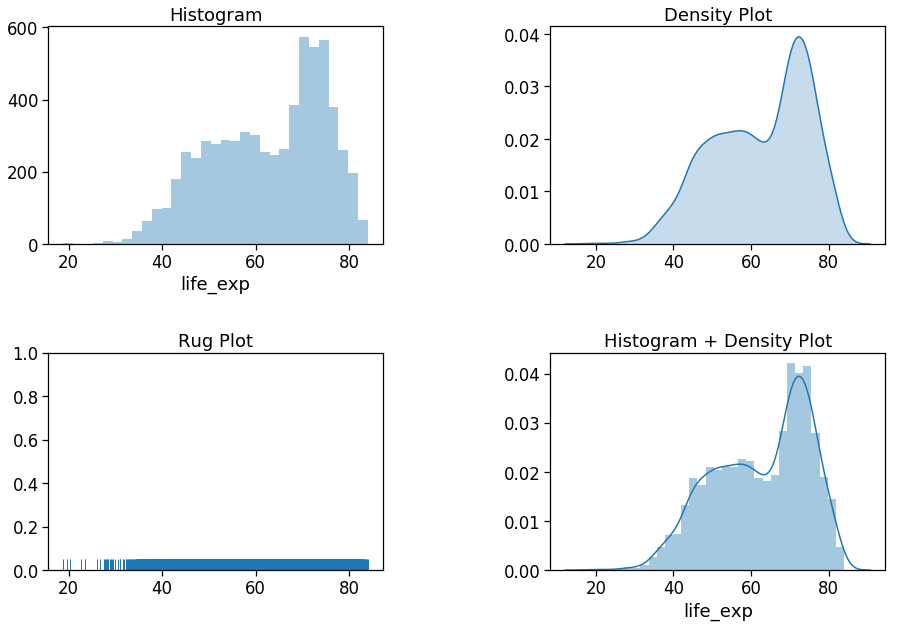
Compares the empirical distribution to the theoretical distribution. In practice, how normally distributed is our empirical variable.
# With a tehoretically perfectly distributed variable
plt.figure(figsize=(8,8))
x = np.random.normal(0,1,500)
_ = stats.probplot(x, dist="norm",plot=plt)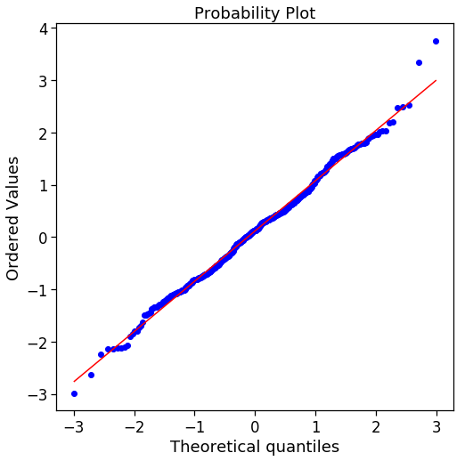
# With our actual life expectancy variable
plt.figure(figsize=(8,8))
_ = stats.probplot(var, dist="norm",plot=plt)
plt.figure(figsize=(15,3))
g = sns.distplot(dat["life_exp"].dropna(),
color="steelblue",
hist=True,kde=False)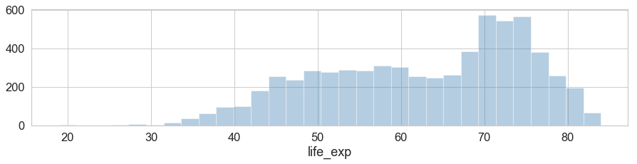
For Histograms, bin size can yield a disparate pictures of a variable.
plt.figure(figsize=(15,3))
g = sns.distplot(dat["life_exp"].dropna(),
color="steelblue",
bins=5,
hist=True,kde=False)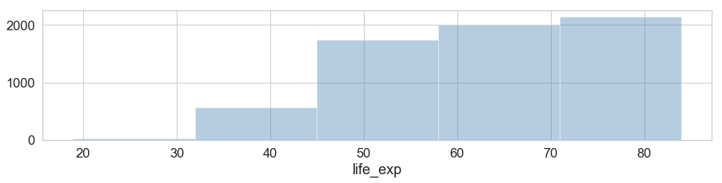
plt.figure(figsize=(15,3))
g = sns.distplot(dat["life_exp"].dropna(),
color="steelblue",
bins=100,
hist=True,kde=False)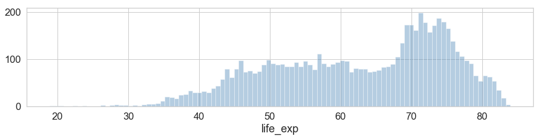
Using a combination of the matplotlib and seaborn libraries, we can easily generate subgraphs to plot many variables simultaneously.
f, axes = plt.subplots(4, 2, figsize=(20, 15))
plt.subplots_adjust(wspace = 0.5,hspace = 0.5)
sns.distplot(dat["gdppc"],
color="steelblue",
hist=True,kde=False,ax=axes[0,0])
sns.distplot(dat["pop"],
color="forestgreen",
hist=True,kde=False,ax=axes[0,1])
sns.distplot(dat["infant_mort"].dropna(),
color="darkred",
hist=True,kde=False,ax=axes[1,0])
sns.distplot(dat["life_exp"].dropna(),
color="orange",
hist=True,kde=False,ax=axes[1,1])
sns.distplot(dat["life_exp_female"].dropna(),
color="pink",
hist=True,kde=False,ax=axes[2,0])
sns.distplot(dat["life_exp_male"].dropna(),
color="lightblue",
hist=True,kde=False,ax=axes[2,1])
sns.distplot(dat["polity"].dropna(),
color="black",
hist=True,kde=False,ax=axes[3,0])
plt.show()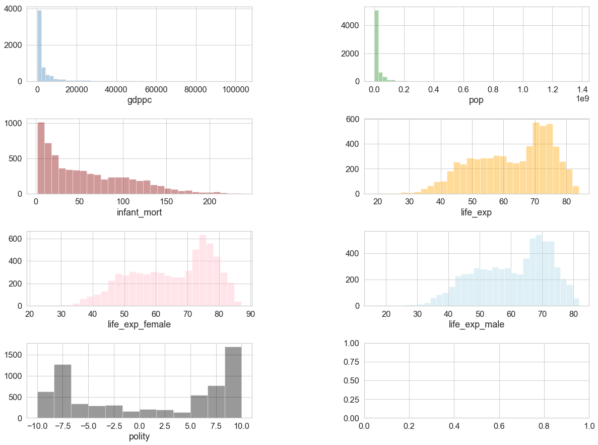
One thing that should instantly stand out is that the scales differ widely.
# Looking at the QQ plot, we can see the variable is way off from being normally distributed.
plt.figure(figsize=(8,8))
d, x = stats.probplot(dat["gdppc"], dist="norm",plot=plt)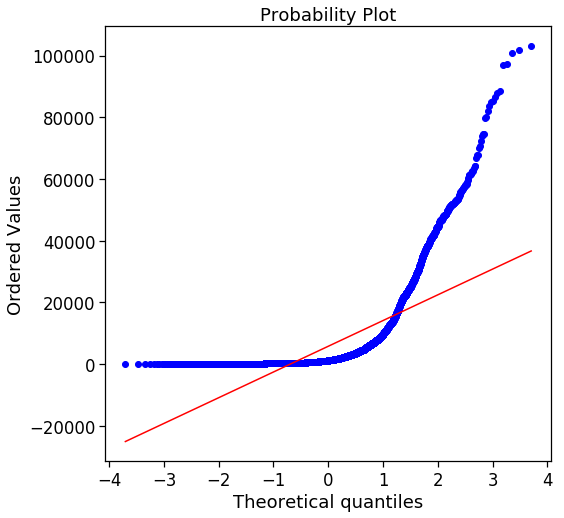
We can adjust the right skewed data with large tail values by taking the natural log of the variable.
# Demonstrate what a log transformation does.
x = np.linspace(0,10e8)
y = np.log(x)
plt.figure(figsize=(15,3))
g = sns.lineplot(x,y)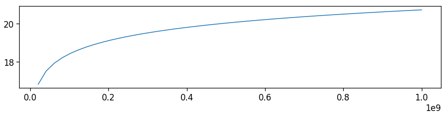
plt.figure(figsize=(15,3))
x = np.log(dat["gdppc"])
g = sns.distplot(x,
color="steelblue",
hist=True,kde=True)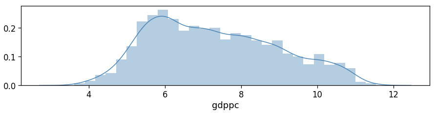
# From the QQ plot, we can see the variable appears more normally distributed once transformed.
plt.figure(figsize=(8,8))
d, x = stats.probplot(np.log(dat["gdppc"]), dist="norm",plot=plt)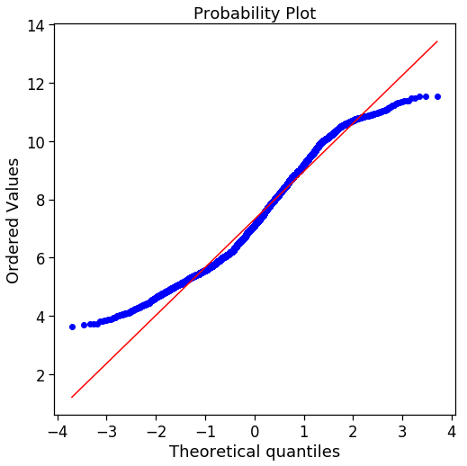
Let’s create two new variables that takes the natural log of GDP per capita and Population.
dat['lngdppc'] = np.log(dat['gdppc'])
dat['lnpop'] = np.log(dat['pop'])
dat.head(3)| index | country | ccode | year | polity | gdppc | pop | continent | regime_type | infant_mort | life_exp | life_exp_female | life_exp_male | missing | lngdppc | lnpop | |
|---|---|---|---|---|---|---|---|---|---|---|---|---|---|---|---|---|
| 0 | 160 | Afghanistan | 700 | 1960 | -10.0 | 59.777327 | 8996351.0 | Asia | authoritarian | NaN | 32.446 | 33.314 | 31.718 | No | 4.090626 | 16.012330 |
| 1 | 161 | Afghanistan | 700 | 1961 | -10.0 | 59.878153 | 9166764.0 | Asia | authoritarian | 236.5 | 32.962 | 33.840 | 32.224 | No | 4.092312 | 16.031095 |
| 2 | 162 | Afghanistan | 700 | 1962 | -10.0 | 58.492874 | 9345868.0 | Asia | authoritarian | 232.6 | 33.471 | 34.359 | 32.724 | No | 4.068905 | 16.050445 |
Standardizes the distribution of the variable by setting the mean to 0 and the variance to 1. This transformation retains the original form of the empirical distribution.
def standardize(x):
return (x - x.mean())/x.std()
# Sim Numbers
x = np.linspace(0,10e8)
y = standardize(x)
plt.figure(figsize=(10,4))
sns.scatterplot(x,y)<matplotlib.axes._subplots.AxesSubplot at 0x7f9541239cc0>
plt.figure(figsize=(10,4))
x = standardize(dat["gdppc"])
g = sns.distplot(x,
color="steelblue",
hist=True,kde=False)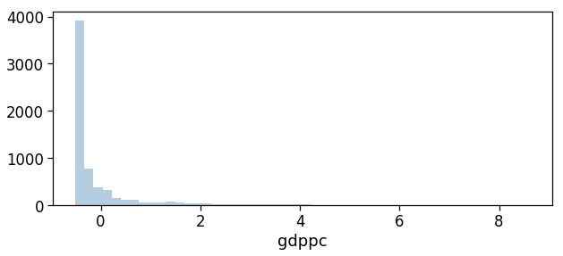
Scales values so that they exist between 0 and 1, where 0 corresponds with the minimum value, and 1 corresponds with the maximum value. This transformation retains the original form of the empirical distribution.
def range_scale(x):
return (x - x.min())/(x.max()-x.min())
# Sim Numbers
x = np.linspace(0,10e8)
y = range_scale(x)
plt.figure(figsize=(10,4))
sns.scatterplot(x,y)<matplotlib.axes._subplots.AxesSubplot at 0x7f9581011c18>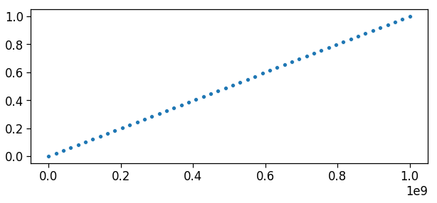
plt.figure(figsize=(10,4))
x = range_scale(dat["gdppc"])
g = sns.distplot(x,
color="steelblue",
hist=True,kde=False)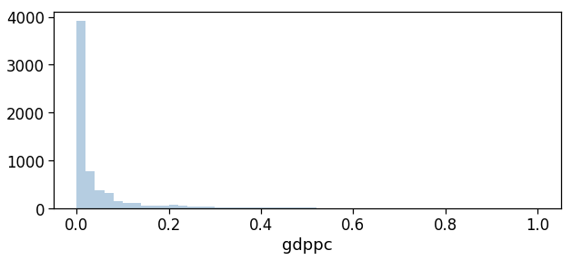
plt.figure(figsize=(15,5))
g = sns.countplot(y="regime_type", data=dat)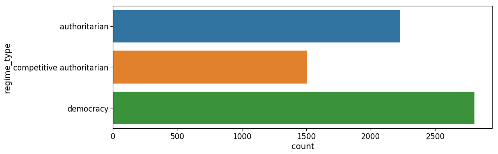
plt.figure(figsize=(15,8))
g = sns.countplot(x="continent",hue="regime_type", data=dat)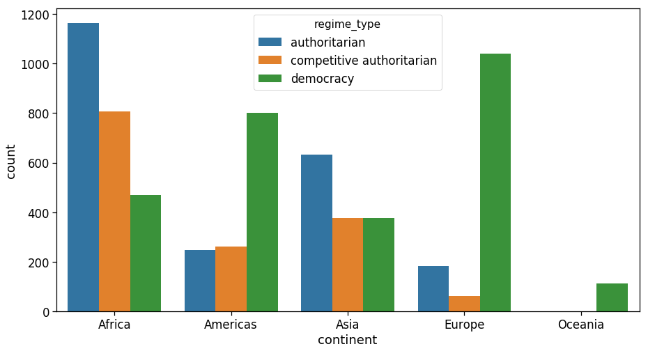
Explore the linear relationship between two (or more) variables.
\[r_{xy} = \frac{\sum^i_N (x_i - \bar{x}) (y_i - \bar{y}) }{ \sqrt{\sum^i_N (x_i - \bar{x})^2 (y_i - \bar{y})^2 } }\]
dat['life_exp'].corr(dat['lngdppc']).round(2)0.83# Expand out to a correlation matrx
dat.loc[:,"polity":"lnpop"].corr().round(2)| polity | gdppc | pop | infant_mort | life_exp | life_exp_female | life_exp_male | lngdppc | lnpop | |
|---|---|---|---|---|---|---|---|---|---|
| polity | 1.00 | 0.36 | 0.03 | -0.55 | 0.53 | 0.55 | 0.52 | 0.46 | 0.18 |
| gdppc | 0.36 | 1.00 | -0.01 | -0.48 | 0.55 | 0.54 | 0.56 | 0.75 | 0.08 |
| pop | 0.03 | -0.01 | 1.00 | -0.04 | 0.07 | 0.06 | 0.08 | -0.03 | 0.58 |
| infant_mort | -0.55 | -0.48 | -0.04 | 1.00 | -0.94 | -0.95 | -0.93 | -0.80 | -0.16 |
| life_exp | 0.53 | 0.55 | 0.07 | -0.94 | 1.00 | 1.00 | 1.00 | 0.83 | 0.21 |
| life_exp_female | 0.55 | 0.54 | 0.06 | -0.95 | 1.00 | 1.00 | 0.99 | 0.83 | 0.21 |
| life_exp_male | 0.52 | 0.56 | 0.08 | -0.93 | 1.00 | 0.99 | 1.00 | 0.83 | 0.21 |
| lngdppc | 0.46 | 0.75 | -0.03 | -0.80 | 0.83 | 0.83 | 0.83 | 1.00 | 0.09 |
| lnpop | 0.18 | 0.08 | 0.58 | -0.16 | 0.21 | 0.21 | 0.21 | 0.09 | 1.00 |
Crosstabs
pd.crosstab(dat.regime_type,dat.continent,margins=True)| continent | Africa | Americas | Asia | Europe | Oceania | All |
|---|---|---|---|---|---|---|
| regime_type | ||||||
| authoritarian | 1163 | 249 | 633 | 182 | 0 | 2227 |
| competitive authoritarian | 808 | 261 | 377 | 62 | 0 | 1508 |
| democracy | 470 | 801 | 377 | 1041 | 114 | 2803 |
| All | 2441 | 1311 | 1387 | 1285 | 114 | 6538 |
Cross tabs represented as proportions
# By Rows
pd.crosstab(dat.regime_type,dat.continent).apply(lambda x: x/x.sum(), axis=1).round(3)| continent | Africa | Americas | Asia | Europe | Oceania |
|---|---|---|---|---|---|
| regime_type | |||||
| authoritarian | 0.522 | 0.112 | 0.284 | 0.082 | 0.000 |
| competitive authoritarian | 0.536 | 0.173 | 0.250 | 0.041 | 0.000 |
| democracy | 0.168 | 0.286 | 0.134 | 0.371 | 0.041 |
# By Columns
pd.crosstab(dat.regime_type,dat.continent).apply(lambda x: x/x.sum(), axis=0).round(3)| continent | Africa | Americas | Asia | Europe | Oceania |
|---|---|---|---|---|---|
| regime_type | |||||
| authoritarian | 0.476 | 0.190 | 0.456 | 0.142 | 0.0 |
| competitive authoritarian | 0.331 | 0.199 | 0.272 | 0.048 | 0.0 |
| democracy | 0.193 | 0.611 | 0.272 | 0.810 | 1.0 |
dat.groupby(['continent'])['gdppc'].mean().sort_values(ascending=False)continent
Oceania 17352.233249
Europe 16050.537032
Asia 5116.408798
Americas 4281.519876
Africa 1106.908969
Name: gdppc, dtype: float64dat.groupby(['country'])['lnpop'].mean().sort_values(ascending=False).head(5).round(2)country
China 20.77
India 20.51
United States 19.32
Indonesia 18.92
Brazil 18.73
Name: lnpop, dtype: float64scatter plot
plt.figure(figsize=(15,5))
sns.scatterplot(x="lngdppc",y="infant_mort",alpha=.6,data=dat)<matplotlib.axes._subplots.AxesSubplot at 0x7f9520cbf1d0>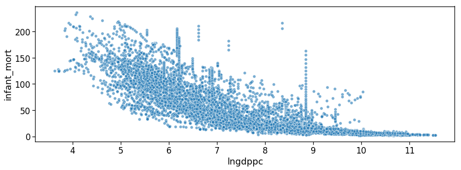
plt.figure(figsize=(10,7))
# Summarize data
d = (dat
.groupby(['country'])
.mean()
.reset_index())
# plot relationship
g = sns.scatterplot(x="lngdppc",
y="infant_mort",
size='lnpop',
hue = 'lnpop',
sizes=(10, 300),
data=d)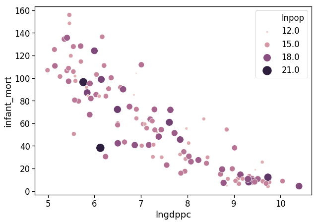
Line plot
plt.figure(figsize=(15,3))
sns.lineplot(x="year",y="polity",data=dat.query("country == 'Nigeria'"))<matplotlib.axes._subplots.AxesSubplot at 0x7f94d0181160>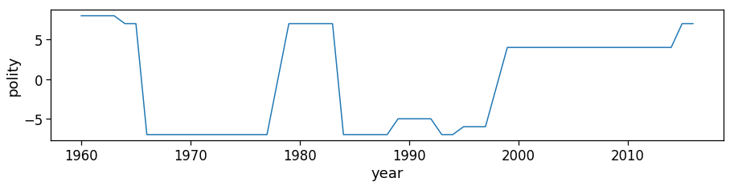
sns.jointplot(x="lngdppc",y="infant_mort",data=dat,
height=10)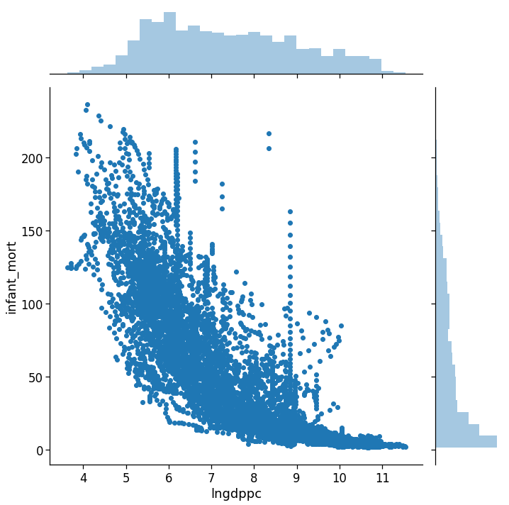
# Regression line
plt.figure(figsize=(15,5))
g = sns.regplot(x="lngdppc",y="infant_mort",
scatter_kws={'alpha':0.1},
data=dat)
# Higher order regression line: x + x^2
plt.figure(figsize=(15,5))
g = sns.regplot(x="lngdppc",y="infant_mort",
scatter_kws={'alpha':0.05},
order=2,
data=dat)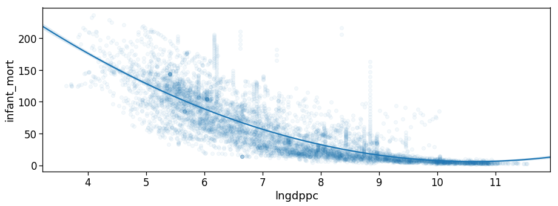
# Lowess (locally weighted linear) regression
plt.figure(figsize=(15,5))
g = sns.regplot(x="lngdppc",y="infant_mort",
scatter_kws={'alpha':0.05},
lowess=True,
data=dat)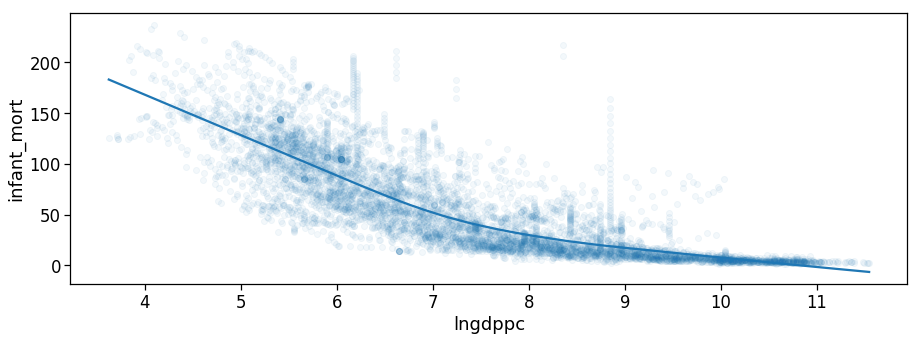
# Regression by Grouping
plt.figure(figsize=(15,5))
g = sns.lmplot(x="lngdppc",y="infant_mort",
hue="continent",
scatter_kws={'alpha':0.1},
height=10,
data=dat)<Figure size 1080x360 with 0 Axes>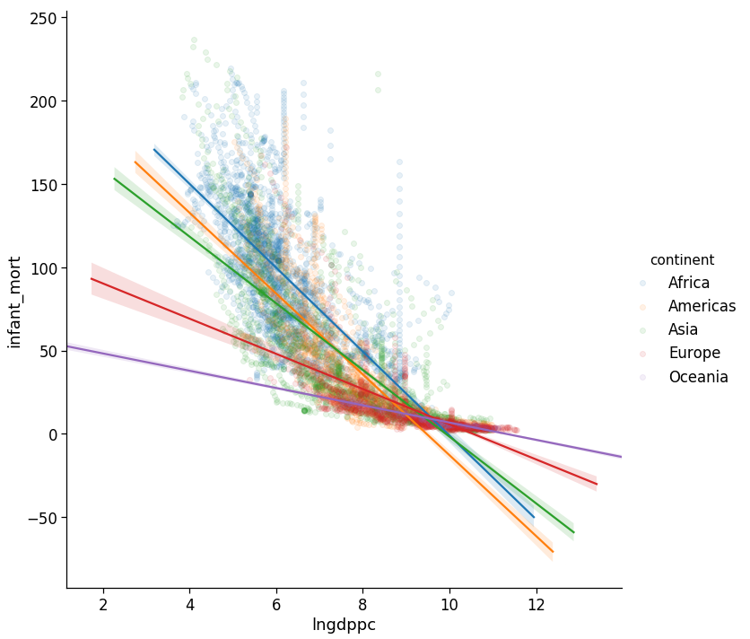
# Generate a correlation matrix
corr_mat = dat.loc[:,["polity","infant_mort","life_exp","lngdppc","lnpop"] ].corr()
# Generate a heatmap
plt.figure(figsize=(15,10))
sns.heatmap(corr_mat,
center=0,
linewidths=.5)<matplotlib.axes._subplots.AxesSubplot at 0x7f9532854358>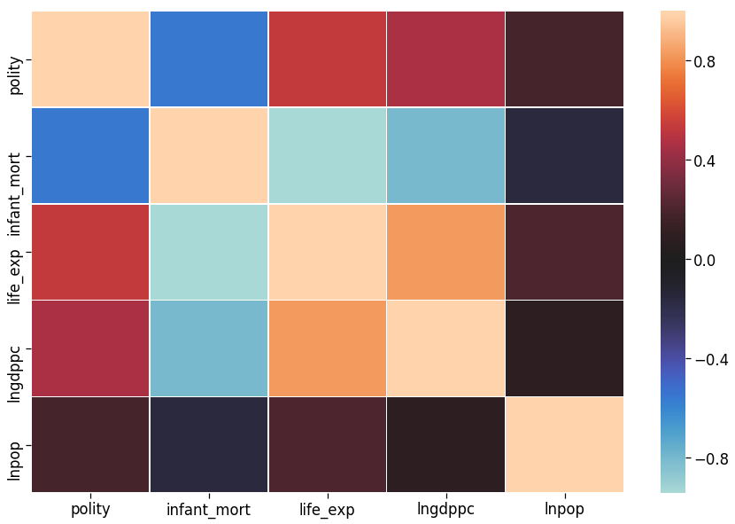
d = dat[['lngdppc','lnpop','polity',"life_exp"]].dropna()
g = sns.PairGrid(d,height=7)
g = g.map_diag(plt.hist)
g = g.map_offdiag(plt.scatter)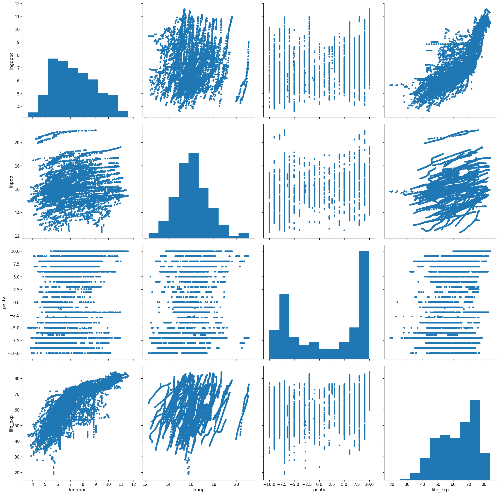
d = dat.groupby(['continent','regime_type']).size().reset_index().rename(columns={0:''})
d = d.pivot_table(columns="continent",index='regime_type')
plt.figure(figsize=(15,10))
sns.heatmap(d,linewidths=.5,cmap="YlGnBu")<matplotlib.axes._subplots.AxesSubplot at 0x7f95717ed9b0>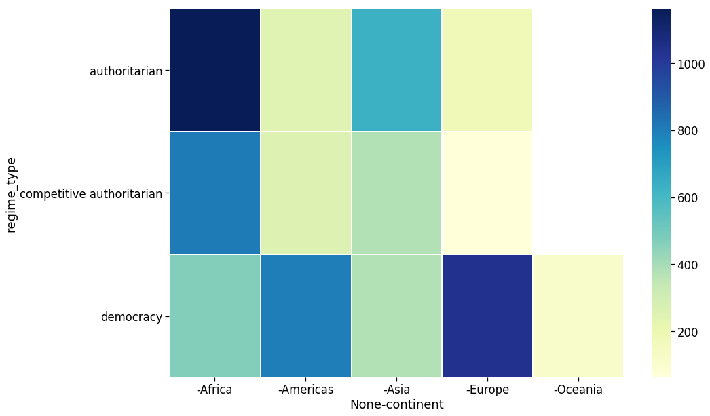
g = sns.catplot(y="regime_type", x="lngdppc",
kind="violin",
height=10,aspect=2,
data=dat)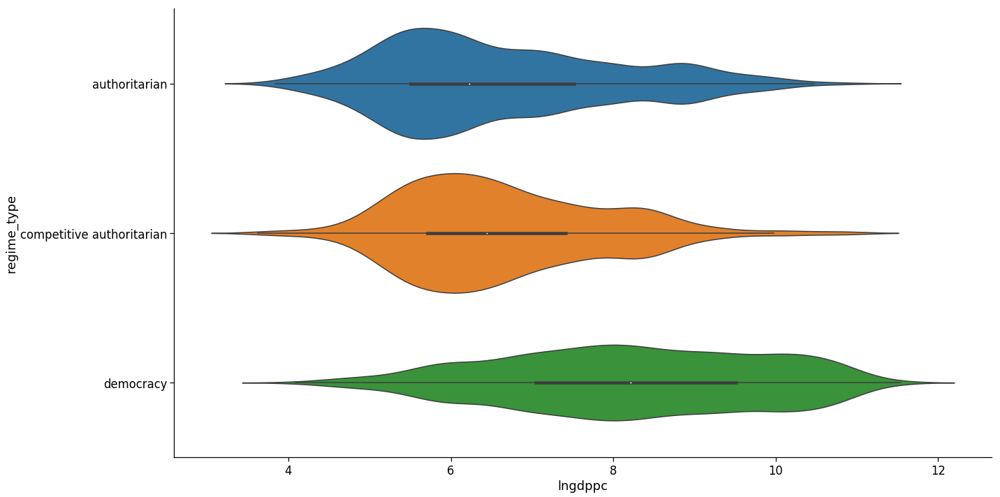
g = sns.catplot(y="regime_type", x="lngdppc",
kind="box",
height=10,aspect=2,
data=dat)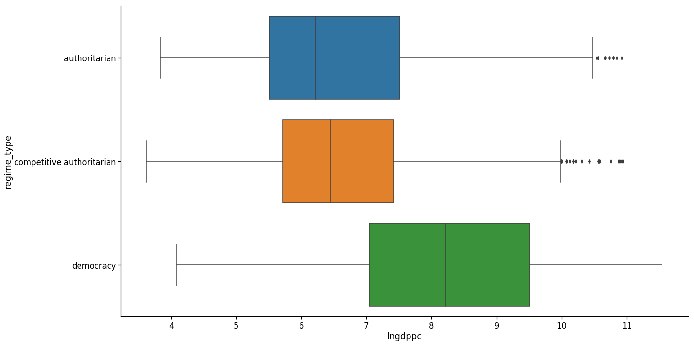
g = sns.catplot(y="regime_type", x="lngdppc",
height=10,aspect=2,
data=dat)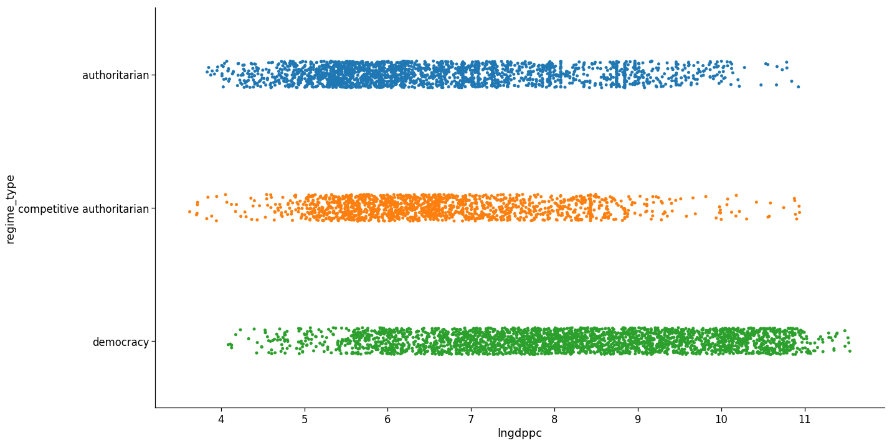
g = sns.catplot(y="regime_type", x="lngdppc",
kind="bar",
height=10,aspect=2,
data=dat)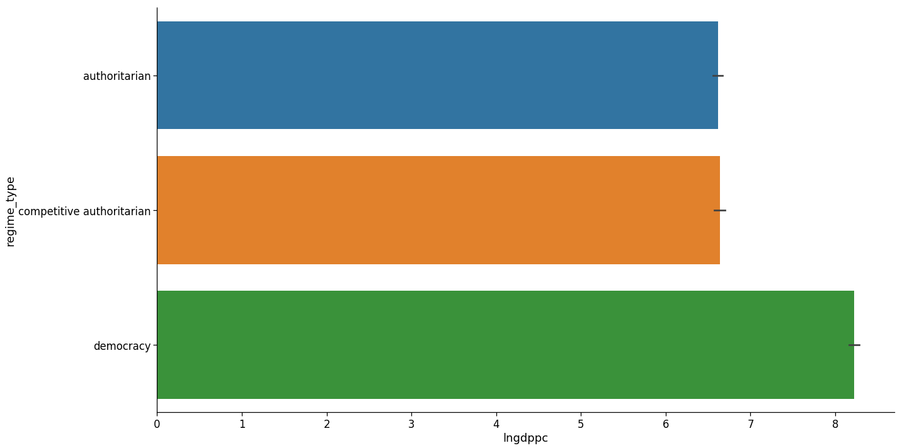